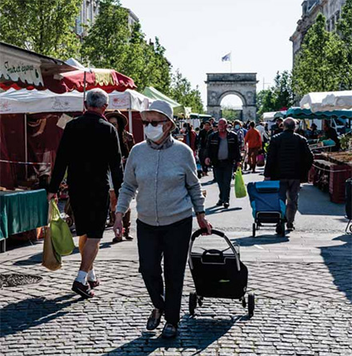

Actualité
Du vert et du rouge sur la carte quotidienne
Les départements de Nouvelle-Aquitaine, région relativement épargnée par l’épidémie, seront-ils de couleur verte sur la carte ? PHOTO ARCHIVES XAVIER LEOTY/« SUD OUEST »
DÉCONFINEMENT Le 11 mai, il sera différencié entre départements, où il prendra des formes plus ou moins strictes
Le déconfinement ne sera pas le même pour tout le monde. Comme l'a dévoilé Édouard Philippe mardi devant l'Assemblée nationale, celui-ci sera plus ou moins strict selon les territoires, le virus ne circulant pas de la même façon partout en France. Dès aujourd'hui, une carte classant les départements en catégorie " verte " ou " rouge " sera dévoilée chaque soir par le Directeur général de la santé afin de préparer l'après-11 mai. Explications.
À quoi va servir cette carte ?
Si des zones sont peu affectées par l'épidémie, d'autres, comme le Grand-Est ou encore l'Île-de-France sont sous tension depuis de nombreuses semaines. Ainsi, dès aujourd'hui, le directeur général de la santé Jérôme Salomon présentera chaque jour, lors de son point quotidien, une carte de France distinguant les départements " verts ", peu touchés par l'épidémie, et les départements " rouges " dans lesquels le déconfinement prendra une forme plus stricte. Chaque jour, cette carte dévoilera comment évolue le virus dans chaque département. Une carte définitive sera ensuite rendue le 7 mai et différents degrés de déconfinement seront appliqués à chaque zone à compter du 11 mai. "